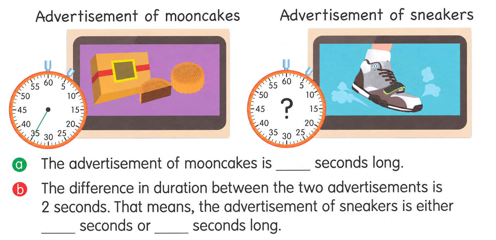
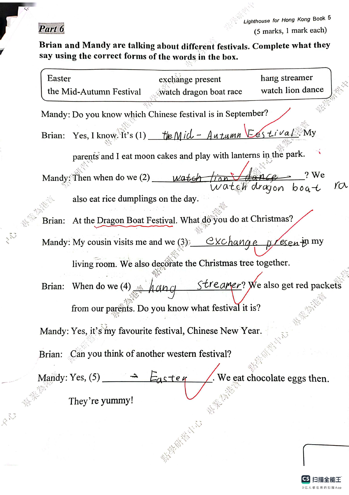
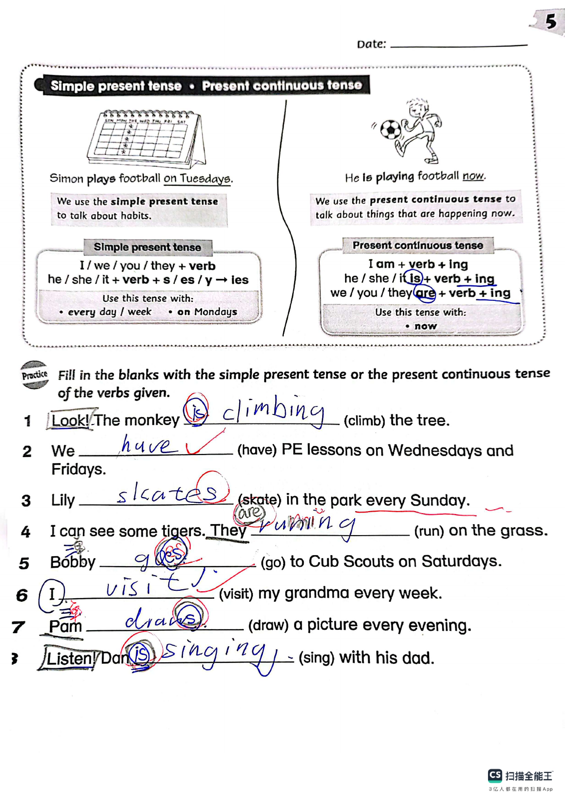
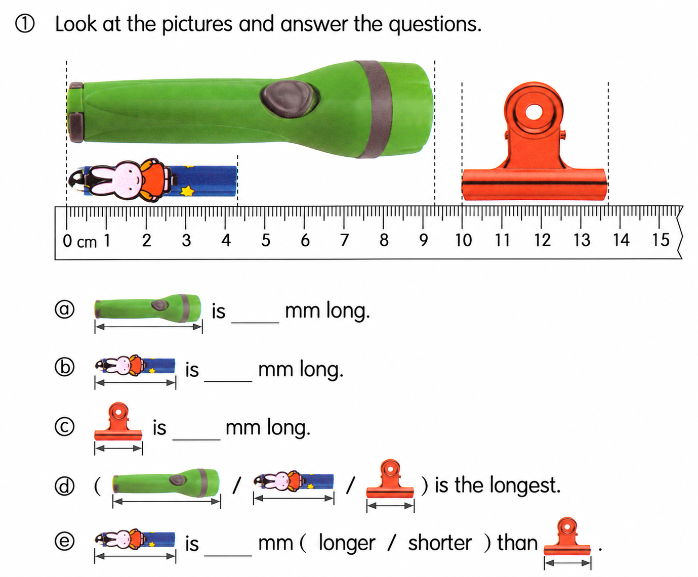

Answer: (a) 35 seconds; (b) 33 seconds or 37 seconds
已掌握
| # | 单词/词组 | 中文意思 | 例句/说明 | 已掌握 |
|---|---|---|---|---|
| noun 名词 | ||||
| 1 | sign | 标志 | Read the sign carefully. | |
| 2 | chapter | 章节 | This chapter is about animals. | |
| 3 | boat | 小船 | The boat is on the water. | |
| 4 | flower | 花 | This flower is red. | |
| 5 | order | 顺序 | Please put them in order. | |
| 6 | kitchen | 厨房 | Dad is cooking in the kitchen. | |
| 7 | dream | 梦想 | My dream is to become a doctor. | |
| verb 动词 | ||||
| 8 | touch | 触摸 | Do not touch the hot cup. | |
| 9 | understand | 理解 | I understand the question. | |
| 10 | throw | 扔掉 | Please throw the empty packet in the bin. | |
| phrase 短语 | ||||
| 11 | years old | 年龄 | I am seven years old. | |
| 12 | clean the dishes | 洗餐具 | We clean the dishes after dinner. | |
| adjective 形容词 | ||||
| 13 | hard | 硬的；困难的 | This question is hard. | |
| 14 | thirsty | 口渴的 | I am thirsty after running. | |
| 15 | lazy | 懒惰的 | The lazy boy did not want to get out of bed. | |
| 16 | different | 不同的 | Our bags are different colours. | |
| 17 | tired | 累的 | I feel tired after the long walk. | |
| 18 | correct | 正确 | This answer is correct. | |
| verb phrase 动词短语 | ||||
| 19 | tell a story | 讲故事 | I tell a story to my little brother. | |
| 20 | visit a museum | 去博物馆 | We visit a museum with our teacher. | |
| # | 单词/词组 | 中文意思 | 例句/说明 | 已掌握 |
|---|---|---|---|---|
| adjective 形容词 | ||||
| 1 | wrong | 错误的 | The answer is wrong. | |
| 2 | lucky | 幸运的 | I was lucky to find my lost key. | |
| 3 | corresponding | 相对应的 | Write each answer in the corresponding box. | |
| 4 | ugly | 丑陋的 | I was hairless, toothless and ugly. | |
| 5 | long | 长的 | There is a long soft sofa. | |
| noun 名词 | ||||
| 6 | toothbrush | 牙刷 | I use a toothbrush every morning. | |
| 7 | timetable | 时间表 | The timetable shows my classes. | |
| 8 | trick | 技巧；把戏，特技 | Here is a trick to help you remember the word. The dog can do many tricks. | |
| 9 | blanks | 空白 | Fill in the blanks with the correct words. | |
| 10 | knowledge | 知识 | Books give us knowledge. | |
| 11 | cafe | 咖啡馆 | We had drinks at a cafe. | |
| 12 | supermarket | 超级市场 | Jerry is at the supermarket with Aunt June. | |
| 13 | culture | 文化 | We learn about our own culture at school. | |
| 14 | flavour | 味道，风味 | This soup has a delicious flavour. | |
| 15 | mango | 芒果 | This mango is sweet and juicy. | |
| noun phrase 名词短语 | ||||
| 16 | Computer Studies | 电脑科 | Gopal is good at Computer Studies. | |
| 17 | daily routine | 日常生活，作息 | Lester is writing about his daily routine. | |
| verb 动词 | ||||
| 18 | cut | 切 | Cut the cheese into thin slices. | |
| 19 | walk | 遛（狗）；带……散步 | I walk my dog along the river. | |
| preposition 介词 | ||||
| 20 | opposite | 在......对面 | The library is opposite the school. | |
| verb phrase 动词短语 | ||||
| 21 | play table tennis | 打乒乓球 | We play table tennis at the activity centre. | |
| 22 | have a barbecue | 烧烤 | I want to have a barbecue. | |
| 23 | eat moon cakes | 吃月饼 | We eat moon cakes at the Mid-Autumn Festival. | |
| 24 | sing 'Happy Birthday' | 唱生日歌 | We sing 'Happy Birthday' to her. | |
| 25 | cut the cake | 切蛋糕 | We cut the cake and shared it. | |
| 26 | go for walks | 外出散步 | Dogs need to go for walks every day. | |
| 27 | clean oneself | 自我清洁 | Cats clean themselves, so they do not need frequent baths. | |
| 28 | save energy | 节约能源 | We need to save energy. | |
| noun/verb 名词/动词 | ||||
| 29 | exercise | 锻炼 | Exercise is good for your health. | |
| adverb 副词 | ||||
| 30 | never | 从不 | I never leave the tap running. | |
| # | 单词/词组 | 中文意思 | 例句/说明 | 已掌握 |
|---|---|---|---|---|
| time/date 时间日期 | ||||
| 1 | Tuesday | 星期二 | Tuesday is a weekday. | |
| 2 | Wednesday | 星期三 | Wednesday is a weekday. | |
| time unit 时间单位 | ||||
| 3 | minute | 分 | A minute has 60 seconds. | |
| directions 方向 | ||||
| 4 | west | 西 | The sun sets in the west. | |
| numbers 数字 | ||||
| 5 | four | 4 | Four is 4. | |
| 6 | eight | 8 | Eight is 8. | |
| 7 | nine | 9 | Nine is 9. | |
| 8 | twelve | 12 | Twelve is 12. | |
| 9 | fifteen | 15 | Fifteen is 15. | |
| 10 | seventy | 70 | Seventy is 70. | |
| 11 | hundred | 百 | One hundred is 100. | |
| solid shape 立体图形 | ||||
| 12 | pentagonal prism | 五棱柱 | A pentagonal prism has pentagonal faces. | |
| 13 | quadrilateral pyramid | 四棱锥 | A quadrilateral pyramid has one quadrilateral base and four triangular side faces. | |
| 14 | base | 底 | The base is at the bottom. | |
| geometry 几何 | ||||
| 15 | obtuse angle | 钝角 | An obtuse angle is greater than 90 degrees and less than 180 degrees. | |
| # | 单词/词组 | 中文意思 | 例句/说明 | 已掌握 |
|---|---|---|---|---|
| numbers 数字 | ||||
| 1 | 3-digit number | 三位数 | A 3-digit number has three digits. | |
| operations 运算 | ||||
| 2 | addition | 加法 | Addition means putting numbers together. | |
| geometry 几何 | ||||
| 3 | line segment | 线段 | Draw a line segment. | |
| 4 | parallel to each other | 相互平行 | The two lines are parallel to each other. | |
| question word 题目词 | ||||
| 5 | count | 数数 | Count from 1 to 10. | |
| 6 | backwards | 向后；倒着 | Count backwards from 20. | |
| 7 | match | 匹配 | Match the number to the word. | |
| answer 答案 | ||||
| 8 | result | 结果 | Check the result after you calculate. | |
| place value 位值 | ||||
| 9 | 5-digit number | 五位数 | 12,345 is a 5-digit number. | |
| comparison 比较 | ||||
| 10 | most | 最多的 | Which group has the most? | |
| 11 | fewest | 最少的 | Which group has the fewest? | |
| 12 | lighter | 更轻的 | A pencil is lighter than a brick. | |
| time/date 时间日期 | ||||
| 13 | common year | 平年 | A common year has 365 days. | |
| 14 | large division | 大格（钟面上相邻两个小时数字之间的一格） | The hour hand moves one large division in one hour. | |
| operations calculation 运算 | ||||
| 15 | subtract A from B | B-A | "Subtract A from B" means B - A. | |
| 16 | expression | 式子 | Write the expression in horizontal form. | |
| 17 | divisor | 除数 | The divisor divides the dividend. | |
| 18 | quotient | 商 | The quotient is the answer in division. | |
| 19 | remainder | 余数 | The remainder is left after division. | |
| 20 | checking | 验算 | Checking by addition shows that 9 - 4 = 5 is correct: 5 + 4 = 9. | |
| teacher math vocabulary 老师数学词汇 | ||||
| 21 | between ... and ... | 在……和……之间 | 7 is between 6 and 8. | |
| 22 | finish | 完成 | Please finish the calculation. | |
| currency money 货币 | ||||
| 23 | coin | 硬币 | The coin is round. | |
| measurement 测量 | ||||
| 24 | centimetre | 厘米 | A centimetre is a small unit of length. | |
| 25 | distance | 距离 | Find the distance between the two points. | |
| 26 | length | 长度 | Find the length of the line. | |
| 27 | millimeter | 毫米 | One millimeter is one tenth of a centimeter. | |
| 28 | weight | 重量 | The weight of this bag is 2 kg. | |
| 29 | pointer | 指针 | The pointer on the scale shows 2 kg. | |
| geometry tool 几何工具 | ||||
| 30 | set square | 三角尺 | A set square helps us draw angles. | |




